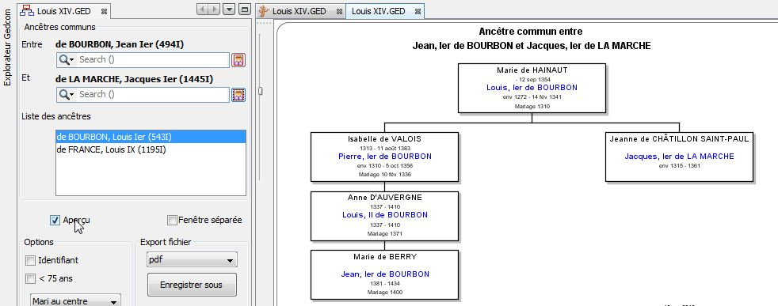

Et le nouveau diagramme de parenté est aussitôt affiché:

Ce rapport vous donne la chaîne d'individus entre les deux personnes
sélectionnées et leurs ancêtres communs.
Les maillons de la chaîne sont les parents biologiques du maillon inférieur
(pas de gestion de l'adoption).
Concernant les personnes sélectionnées par l'utilisateur, c'est leur dernier conjoint en date qui est affiché.
Les personnes sont choisies en saisissant leur nom et prénom dans les deux rubriques Search. Les noms correspondant apparaissent dans une liste au fur et à mesure de la saisie. Pour terminer la saisie, tapez sur la touche ENTRÉE ou cliquez avec la souris sur un nom dans la liste.
Exemple: Saisir le nom de la première personne
"de
bourbon j" et cliquez
sur de BOURBON Jean
1er
Puis saisir le nom de la deuxième
personne "de
la marche ja" et cliquez
sur De la MARCHE
Jacques, Ier.
Dès que les deux personnes sont choisies, la liste de leurs ancêtres communs est affichée en dessous.
Exemple: Les personnes choisies dans l'exemple ont 2 ancêtres communs:
Cliquez sur Aperçu pour voir le diagramme
de parenté par le premier ancêtre De BOURBON
Louis Ier dans la fenêtre voisine.

Puis cliquez sur le deuxième ancêtre dans
la liste pour voir le diagramme de parenté par le deuxième ancêtre
De FRANCE Louis IX.
On peut aussi choisir rapidement la personne présélectionnée dans l'arbre dynamique en cliquant sur le bouton .
Exemple: De Clermont Jean est présélectionné dans l'arbre dynamique (cadre
rouge dans la fenêtre de droite).
Pour le choisir, cliquez sur le
bouton
Et le nouveau diagramme de parenté est aussitôt affiché:
Le diagramme peut être exporté dans un fichier au format PDF ou PNG ou SVG (=HTML) en cliquant sur le bouton Enregistrer sous.
|
|
|